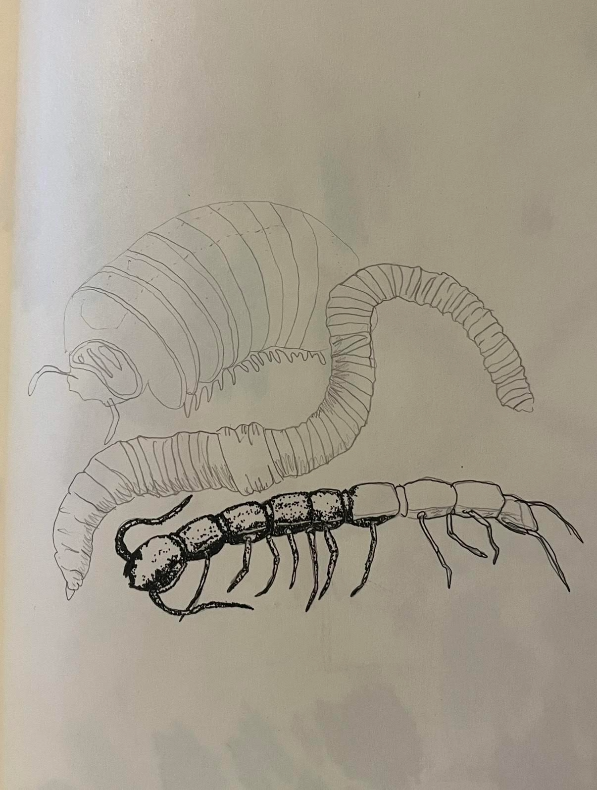
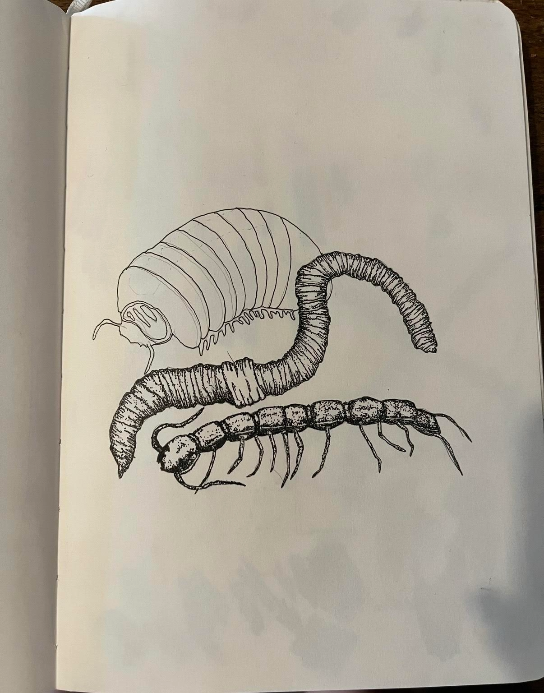
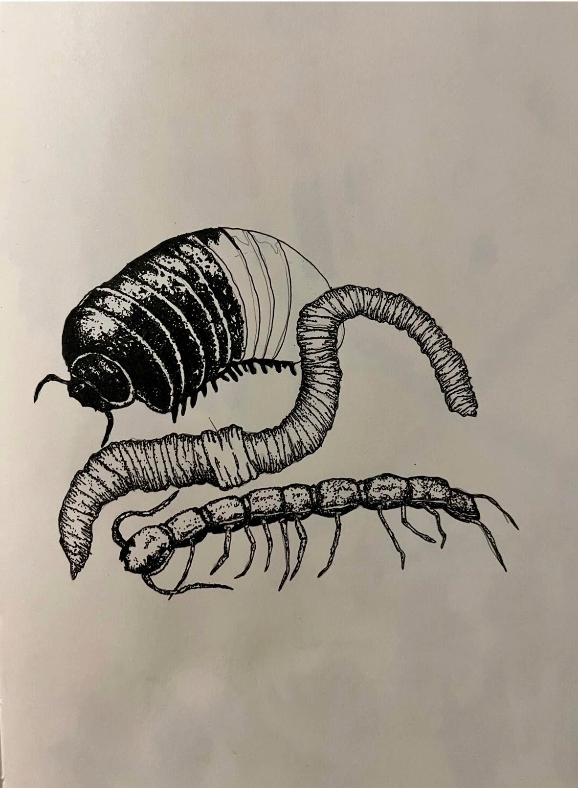
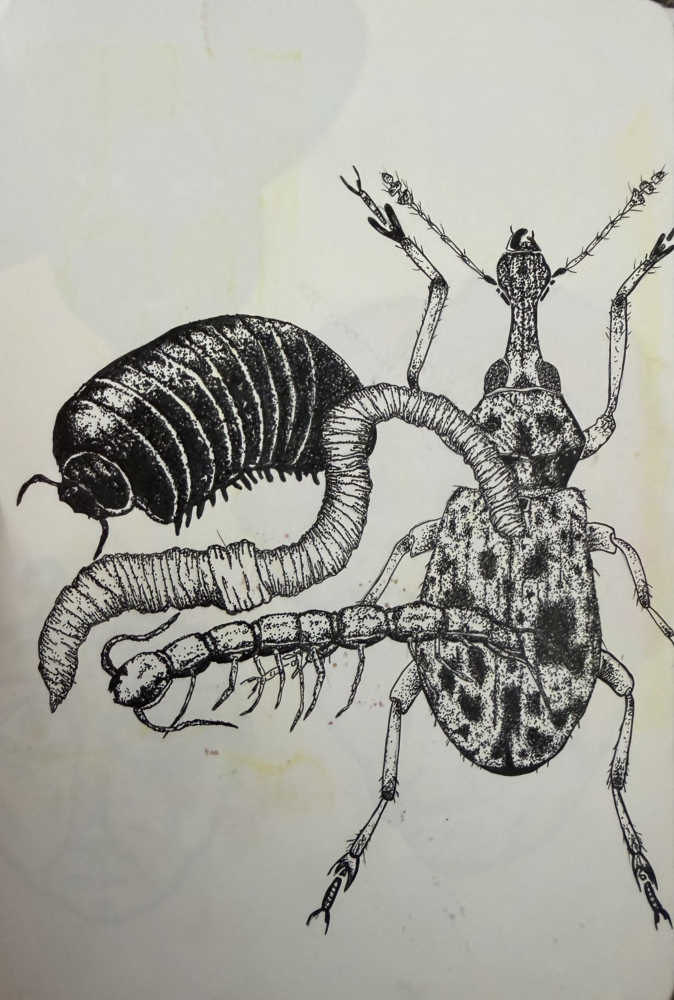
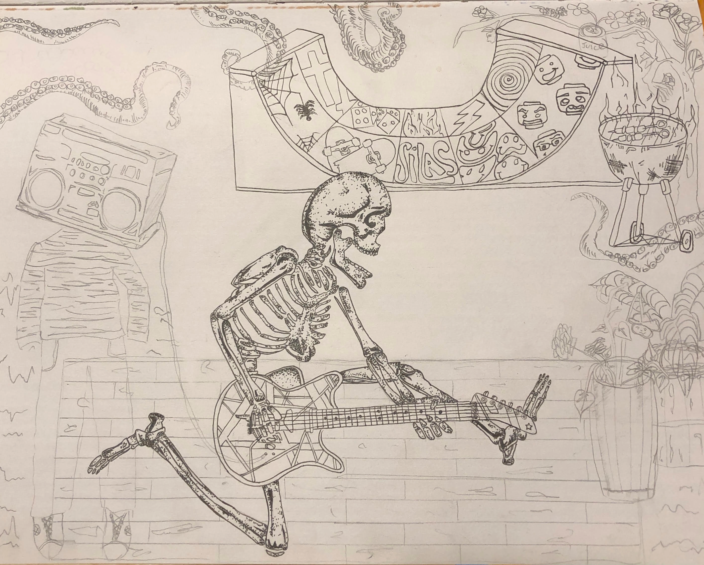
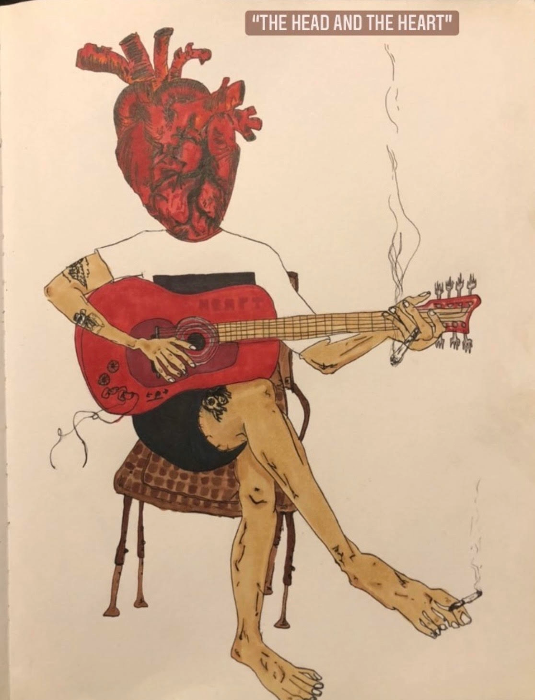
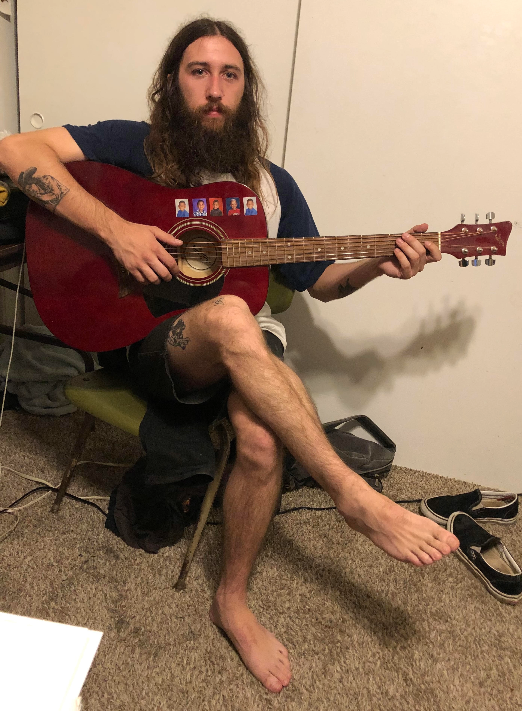

Reflection: This project began with curiosity and a digital reference. Sitting in front of my screen, I found a reference photo of an insect online and began translating its intricate textures into pencil strokes. During this initial sketching phase, I mapped out the stark contrasts—carefully leaving blank spaces for the brightest highlights and blocking out the deeply saturated, colored-in values.The piece was abruptly paused when life got in the way. The sketch sat forgotten in a drawer for months until a random cleanup brought it back to light. Reconnecting with the drawing felt like meeting an old friend. I jumped back into the process, completing he worm and carving out half of the rolly-polli before stepping away again for a few weeks to let the composition breathe.When I finally returned to finish the remaining half of the rolly-polli, the page still felt incomplete. To balance the composition and push the narrative of this micro-ecosystem, I made the spontaneous decision to add a beetle to the group.

Reflection: This sketch began as a quiet act of love-a handmade
poster meant for an audience of one. When my little brother was battling childhood
leukemia, the world felt heavy and uncertain. I wanted to give him a window
back into the vibrant, joyful life he deserved. So, I filled that paper with the things
that defined him, not his illness: skating, cooking, eating octopus, gardening, and his
love for Halloween. Among those scribbles was a skeleton playing a guitar, a nod to
his passion for music wrapped in a playful, spooky theme he loved. My only goal at that
moment was to make him smile, to offer a brief escape into a world where he was just a
kid doing what he loved.
What started as a personal beacon of hope for our family
eventually grew into something much bigger. My older brother, who runs a clothing brand,
saw the spirit in that sketch-specifically the guitar-playing skeleton-and recognized
its potential to help. He decided to put the design on a t-shirt, turning a private
symbol of resilience into a tool to help our mom handle the mounting medical bills.


Reflection What started as a quiet, ordinary night hanging out with my boyfriend
unexpectedly bloomed into a creative piece.He was sitting with his guitar, playing and singing
"Rivers and Roads" by The Head and the Heart, while I captured the moment in a quick photograph.The
band's name-The Head and the Heart-stuck with me, shifting from a literal title into a profound visual
concept. I decided to sketch him from the photo, but with a surrealist twist: replacing his head with
a giant, anatomically inspired heart.
This visual choice became a direct metaphor for the age-old
tug-of-war between logic and passion. Often, we are told that the head and the heart are at odds,
forcing us to choose between rational thought and emotional impulse. However, watching him play music-an
act that requires both the cognitive precision of muscle memory and the raw emotional depth of expression-made
me realize how beautifully they can coexist. By physically replacing the head with a heart, the drawing
symbolizes a harmonious integration, suggesting that true balance comes when our intellect and our deepest
passions work together as one.